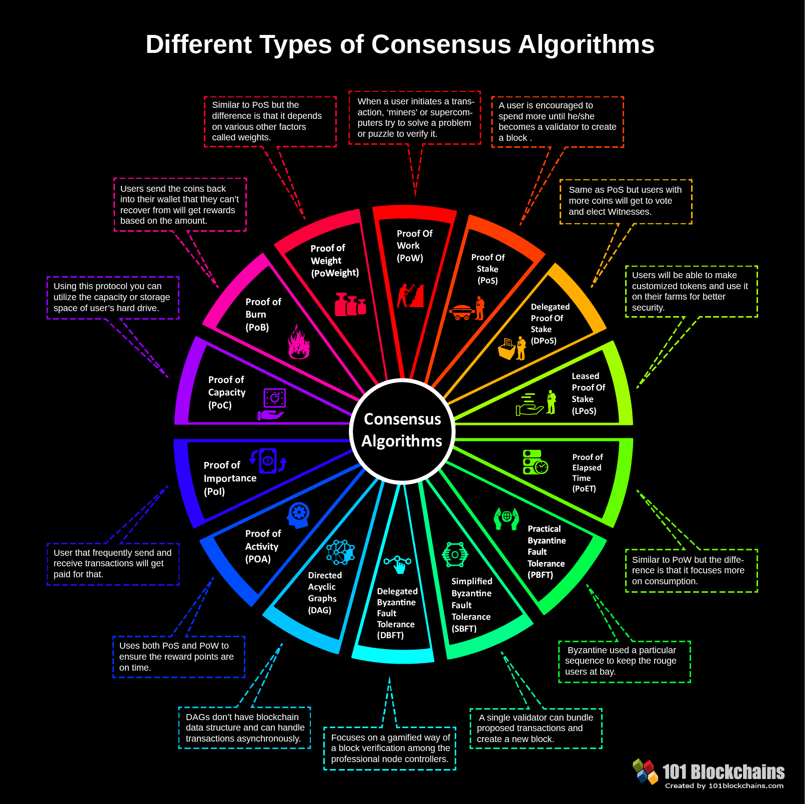
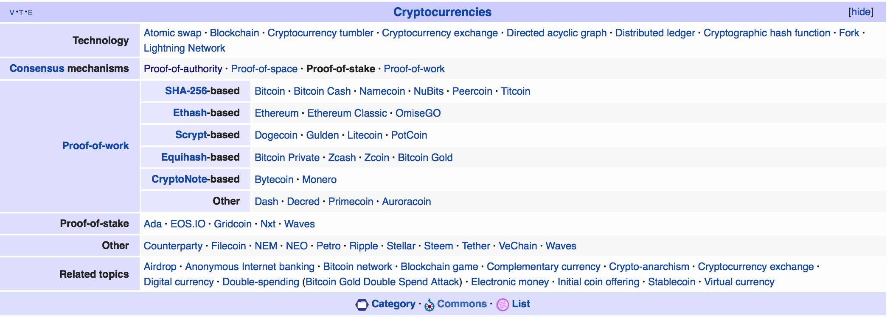

目录 [−]
先占个坑， 慢慢整理。
本文是正在整理，当你看不到这句话的时候，意味着整理完成了。
最近101blockchains 列举了常用的区块链的公式算法，并且详细介绍了这些算法的思想、好处和坏处，当然其它文章中还介绍了一些公式算法。正如文章中所说，没有一个共识算法是完美的，采用哪种算法是一个tradeoff的过程。
本文整理了区块链的公式算法，包括算法思想介绍、好处和不好的地方。

POW
Proof of Work
区块链网络中第一个引入的公式算法，基于算了的共识算法。
POS
Proof of Stake
DPOS
Delegated Proof-of-Stake
LPOS
Leased Proof-Of-Stake
POE
Proof of Elapsed Time
BFT
Byzantine Fault Tolerance
PBFT
Practical Byzantine Fault Tolerance
SBFT
Simplified Byzantine Fault Tolerance
DBFT
Delegated Byzantine Fault Tolerance
DAG
Directed Acyclic Graphs
POA
Proof-of-Activity
POI
Proof-of-Importance
POC
Proof-of-Capacity
POB
Proof-of-Burn
POW
Proof-of-Weight
POA
Proof-of-Authority
维基百科上有一些区块链公式算法的介绍，但是不多，甚至这个词条还没有被创建。

参考资料
- https://101blockchains.com/consensus-algorithms-blockchain/
- https://hackernoon.com/a-hitchhikers-guide-to-consensus-algorithms-d81aae3eb0e3
- https://medium.com/coinmonks/blockchain-consensus-algorithms-an-early-days-overview-2973f0cf49c6
- http://jips-k.org/file/down?pn=530
- https://www.logicsolutions.com/5-types-blockchain-consensus-mechanisms/
- https://www.coindesk.com/short-guide-blockchain-consensus-protocols/
- https://en.wikipedia.org/wiki/Proof-of-stake